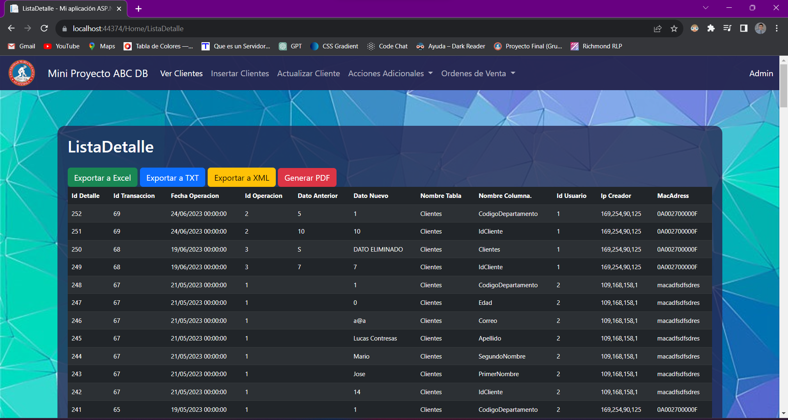

Portafolio
Auditoria DBEste proyecto tubo como finalidad poner en practica los conocimientos adquiridos en el curso de base de datos II en donde se realizo un programa en .Net con SQL Server como gestor de base de datos, se implemento un sistema que monitoreara los cambios realizados en el sistema obteniendo datos indesipensables dentro de la bitacora. Ademas tambien se implementaron botones de reporteria y exportacion. |

|